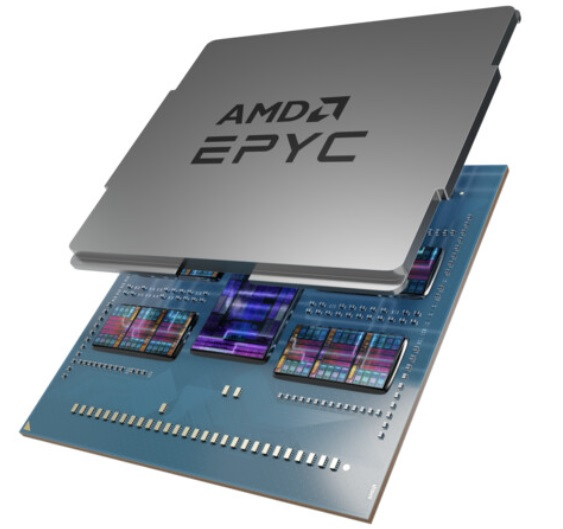

Date of Issued :2022/12/20
Subject : AMD EPYC™ プロセッサー技術詳細「ハイブリッドマルチダイアーキテクチャー後編と’Zen4'コア」
Message Contents :
前回は、AMD EPYC™ プロセッサーのマルチダイアーキテクチャーについてを紹介させていただきました。今回は、その後編としてI/Oダイとインフィニティアーキテクチャー概要、および「’Zen4’コアの詳説」について説明をさせていただきます。
I/Oダイにおけるイノベーション：
I/OダイもCPUと並行した同様のイノベーションがあります。EPYC 9004では、PCIe® Gen 5 機能をI/Oダイへ実装することで、前シリーズからI/O帯域幅を2倍にしました。また、I/O帯域幅を2倍にするだけでは満足できず、サーバー設計時にI/Oサブシステムを柔軟に割り当てることができる機能として、AMD Infinity Fabric™インターコネクト、SATAディスクコントローラ、およびび Compute Express Link(CXL™) 1.1+ メモリコントローラをサポートしました。I/OダイはAMD Infinity Guard機能セットの一部であるさまざまなメモリ暗号化メカニズムを管理する、専用のセキュリティプロセッサがメモリコントローラとタイトに配置されています。
AMDインフィニティアーキテクチャー：
Hybrid Multi-Chip Architectureに基づくプロセッサの設計する場合、相互接続のパフォーマンスが最も重要です。AMDインフィニティアーキテクチャの核心は、並外れた規模レベルをサポートする相互接続、すべてのレイヤーにおけるリーダーシップです。 各コンポーネントは、AMD Infinity Fabricテクノロジを使用して通信します。これは、CPU間、マルチチップアーキテクチャのコンポーネント間で使用される接続であり、「Zen 4」プロセッサ コア、メモリ、PCIe® Gen 5 I/O、およびセキュリティメカニズムを相互に接続するために使用されます。 その結果、このアーキテクチャは画期的なパフォーマンスと効率を実現し、次世代コンピューティングへの継続を果たします。
’Zen4'コアの詳細
AMDは、継続的な最適化への取り組みを、コア設計の中核としております。第4世代AMD EPYCに統合された「Zen 4」コアプロセッサは、5nm 製造技術で製造された最初で唯一のx86サーバーCPUです。なぜならば、サーバープロセッサはマルチチップアーキテクチャの一部であり、このコアコンプレックスも部品の一部として、I/O ダイとは独立して更新および強化ができます。たとえば、「Zen 3」コアを、L3キャッシュの量を劇的に増やすテクノロジーであるAMD 3D V-Cacheで強化しました。およびこれらのような機能強化は、「Zen 4」コアでも同様に期待されています。 EPYC 9004シリーズプロセッサで利用するコアコンプレックスは、最大8個のコア、コアあたり1 MBの専用 L2 キャッシュ、および 8 個のコア間で共有される32 MBのキャッシュで構成されます (図 2)。
2桁の性能改善：
世代ごとに、クロック1サイクルあたりの命令数が 2桁の割合で向上するように努力しており、これは新しいEPYCプロセッサシリーズごとに実現できています。（別添付資料参照）「Zen 3」コアに対する改善には、コアあたり1 MBの専用L2キャッシュ、分岐予測の改善、より大きなキャッシュ操作、より深い内部バッファーが含まれます。
新規命令セットの導入:
「Zen 4」コアには、人工知能、機械学習、高性能コンピューティングワークロードが進化するように設計された新しい命令が導入されています。完全なAVX-512 命令セットは、業界標準に適合するように実装されています。 これらにはBFLOAT16 およびベクトル化されたニューラルネットワーク命令 (VNNI)が含まれます。これら重いデータ処理命令の実装は、AVX-512を機能するようにコーディングされたアプリケーションの変更なく動作できます。 これらのアプローチは、CPUを介するパスと同じ256ビットデータパスを使用し、それら2つの部分がシーケンシャルなクロックサイクルで実行できるようにします。 結果、熱負荷を管理するためにCPUクロックを調整する必要がないことを意味します。CXLコントローラを介したしたメモリ拡張の可能性は、仮想メモリは57Bitでアドレス指定できるようになり、これをサポートするためにネストされた第５レベルのページテーブルが実装されました。
セキュリティへの拡張
セキュリティについて、以前からの各「Zen」コア世代は、既知アプリケーションに変更を加える必要のない緩和策が組み込まれています。前世代「Zen」コアは、プロセッサキャッシュが一度読み取られたメモリへのタグ付けが原因である、サイドチャネル攻撃に耐性があります。これはスレッドが、実行中に別のスレッドのデータを表示できる事を最小化できます。「Zen 4」コアでは、仮想化環境でのゲストオペレーティングシステムを１つのコアで排他的に実行する機能を導入しました。これにより、キャッシュメモリを標的としたサイドチャネル攻撃からの保護に役立つソリューションがさらに導入されました。仮想化環境の新しい機能サポートには、セキュアマルチキー暗号化 (SMKE) が含まれます。これにより、ハイパーバイザーはCXL接続メモリのアドレス空間範囲を選択的に暗号化できます。 SMKEで暗号化されたメモリは、再起動後もCPUからアクセスできます。既存のソフトウェア暗号化フレームワークは、デバイスの実装に関係なく、CXL 接続メモリとシームレスに連携します。
